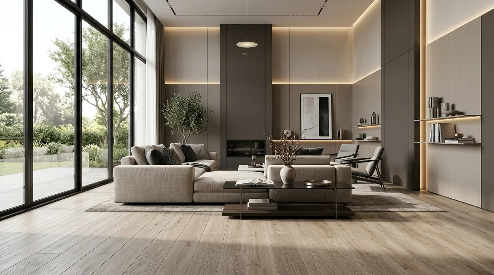

Mengapa Renovasi Tanpa Bongkar Total Lebih Efisien?
Jawaban Langsung: Renovasi tanpa bongkar total efisien karena memangkas biaya pembuangan puing, mempercepat durasi pengerjaan, dan menjaga integritas struktur utama hunian Anda.
Renovasi tanpa merusak struktur utama memberikan efisiensi tinggi dari segi durasi dan operasional harian. Berdasarkan data Badan Pusat Statistik (BPS) periode 2024-2025 mengenai indeks harga konstruksi, biaya tenaga kerja dan pembuangan puing menyumbang hingga 35% dari total anggaran pembongkaran total. Dengan mempertahankan struktur eksisting, porsi anggaran tersebut dapat dialihkan langsung ke peningkatan mutu material interior maupun eksterior.
Secara teknis, metode ini meminimalkan gangguan lingkungan seperti debu berlebih, kebisingan, serta risiko penurunan kekuatan struktural yang sering terjadi akibat pembongkaran dinding pemikul beban (bearing wall). Langkah ini sangat ideal bagi operasional ruang usaha maupun hunian aktif.
- Zero Demolition Cost: Menghilangkan alokasi biaya sewa truk puing dan tenaga pembongkaran dinding masif.
- Operasional Berkelanjutan: Penghuni rumah atau staf kantor tetap dapat beraktivitas di area lain selama renovasi berlangsung.
- Kecepatan Serah Terima: Pekerjaan selesai dalam hitungan pekan, bukan hitungan bulan.
Bagaimana Cara Merencanakan Renovasi Bertahap Sesuai Budget?
Jawaban Langsung: Rencanakan renovasi bertahap dengan menentukan skala prioritas area, menginspeksi struktur eksisting, serta memilih material overlay yang fleksibel dipasang cepat.
Perencanaan renovasi bertahap membutuhkan identifikasi prioritas kerusakan dan skala fungsi area. Langkah pertama adalah memisahkan kebutuhan perbaikan struktural ringan (seperti kebocoran atau retak rambut) dari kebutuhan estetika. Penjadwalan pengerjaan secara berurutan memastikan fungsi bangunan tetap dapat berjalan tanpa terganggu total.
Langkah strategis dalam perencanaan renovasi terukur meliputi:
- Inspeksi Teknis Awal: Memastikan kualitas fondasi, tiang penyangga, dan instalasi perpipaan dalam kondisi aman.
- Skala Prioritas Ruang: Mendahulukan area dengan lalu lintas tinggi seperti ruang tamu, area kerja, atau fasad depan.
- Pengadaan Material Efisien: Memilih material modular atau pelapis modern yang dapat dipasang langsung di atas permukaan lama.
- Pengalokasian Dana Darurat: Menyediakan cadangan dana sekitar 10-15% dari total anggaran untuk antisipasi penyesuaian lapangan.
Laporan analisis industri jasa konstruksi dari Asosiasi Kontraktor Indonesia (AKI) tahun 2025 mencatat bahwa metode renovasi berbasis peremajaan permukaan (surface makeover) mampu menekan durasi pengerjaan rata-rata dari 90 hari menjadi hanya 20–30 hari kerja. Jika Anda ingin menyusun anggaran terencana, manfaatkan layanan Booking Survei Renovasi Gratis dari Kontraktor Bangunan.

Pemasangan lantai overlay SPC dan custom wall panel dengan indirect LED strip menyegarkan interior living area secara instan tanpa bongkar keramik lama.
Apa Saja Teknik Renovasi Ringan Rumah yang Paling Efektif?
Jawaban Langsung: Teknik paling efektif meliputi pengerjaan lantai overlay, aplikasi wall panel pada dinding, pembaruan pencahayaan LED, serta perbaikan lapisan luar furnitur eksisting.
Terdapat beberapa teknik renovasi ringan yang terbukti mengubah estetika bangunan secara drastis tanpa perlu merobohkan dinding atau mengganti fondasi:
1. Metode Lantai Overlay
Mengganti lantai tidak harus membongkar keramik lama. Penggunaan material seperti Vinyl Luxury Tile (LVT), SPC Flooring, atau parket komposit dapat langsung direkatkan di atas keramik eksisting yang rata.
2. Finishing Dinding & Fasad
Mengubah karakter visual dapat dilakukan melalui aplikasi wall panel PVC/WPC, pengecatan tekstur aksen, atau penambahan kisi-kisi aluminium komposit pada fasad eksterior.
3. Optimalisasi Lighting Design
Penggantian titik lampu konvensional menjadi downlight LED, cove lighting tersembunyi, dan spotlight aksen mampu menciptakan kesan ruang yang jauh lebih luas dan mewah.
4. Re-coating Furnitur Built-in
Untuk kabinet dapur atau lemari yang masih kokoh, penggantian laminasi HPL (High Pressure Laminate) atau duco finishing memberikan tampilan baru yang elegan.
Perbandingan Solusi Renovasi: Bongkar Total vs Tanpa Bongkar Total
Jawaban Langsung: Metode tanpa bongkar total unggul signifikan dalam efisiensi waktu, keterjangkauan biaya, serta kenyamanan karena tidak mengharuskan pengosongan total area bangunan.
Untuk memberikan gambaran objektif sebelum Anda memulai pengerjaan, berikut adalah tabel perbandingan spesifikasi dan parameter kerja antara metode renovasi konvensional dan metode peremajaan efisien dari Kontraktor Bangunan:
| Parameter Perbandingan | Metode Bongkar Total | Metode Tanpa Bongkar Total (Kontraktor Bangunan) |
|---|---|---|
| Estimasi Durasi | 3 – 6 Bulan | 2 – 4 Minggu |
| Tingkat Limbah Puing | Sangat Tinggi (> 60%) | Minimal (< 10%) |
| Risiko Struktur | Tinggi (Butuh hitung ulang fondasi) | Sangat Rendah (Mempertahankan modul asli) |
| Kebutuhan Relokasi | Wajib Pindah / Tutup Operasional | Dapat Tetap Dihuni / Operasional Sebagian |
| Efisiensi Biaya | Anggaran Tinggi (Biaya bongkar + bangun) | Hemat hingga 40%–50% |
| Garansi Pengerjaan | Standar Kontrak Baru | Garansi Pemeliharaan & Material Resmi |
Guna memastikan pelaksanaan renovasi berjalan akurat sesuai anggaran, tim profesional Kontraktor Bangunan siap membantu Anda mulai dari tahap analisis awal hingga pengerjaan akhir. Segera manfaatkan penawaran Booking Survei Renovasi Gratis dari kami untuk mendapatkan gambaran skema renovasi yang paling efisien bagi properti Anda.
Bagaimana Cara Menjaga Hasil Renovasi Agar Tahan Lama?
Jawaban Langsung: Jagalah ketahanan renovasi dengan menggunakan material berkualitas tinggi, mengaplikasikan waterproofing yang tepat, serta menyerahkan pengerjaan pada teknisi berpengalaman.
Ketahanan hasil renovasi sangat bergantung pada pemilihan material penutup dan kerapian detail pengerjaan. Penggunaan pelapis anti-air (waterproofing) pada area basah sebelum pemasangan material baru merupakan hal mutlak. Selain itu, pastikan integrasi antara material lama dan material baru memiliki batas sambungan (expansion joint) yang rapi untuk mencegah keretakan akibat pemuaian suhu.
Melibatkan tenaga ahli profesional seperti Kontraktor Bangunan memastikan setiap sambungan material, instalasi kelistrikan tambahan, dan penataan ulang tata letak dikerjakan sesuai standar keamanan bangunan yang berlaku.
Pertanyaan yang Sering Diajukan (FAQ)
Kesimpulan Praktis
Mengaplikasikan tips renovasi rumah tanpa bongkar total adalah solusi paling cerdas untuk memperbarui tampilan hunian maupun tempat usaha secara cepat dan efisien. Dengan berfokus pada teknik overlay, pembaruan finishing, serta penataan ulang elemen visual, Anda dapat menghemat biaya secara signifikan tanpa mengorbankan kualitas dan estetika.
Siap mentransformasi hunian atau ruang usaha Anda dengan hasil maksimal dan jadwal yang tepat? Percayakan perencanaan dan eksekusi proyek Anda kepada Kontraktor Bangunan. Hubungi kami sekarang dan amankan layanan Booking Survei Renovasi Gratis untuk konsultasi teknis langsung di lokasi Anda!